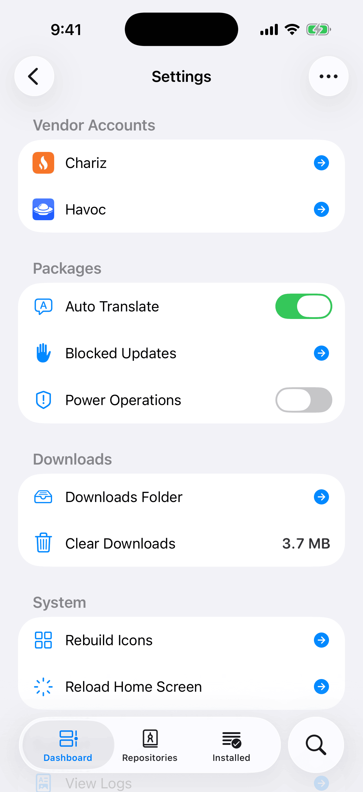
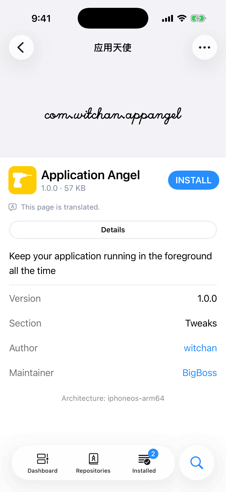
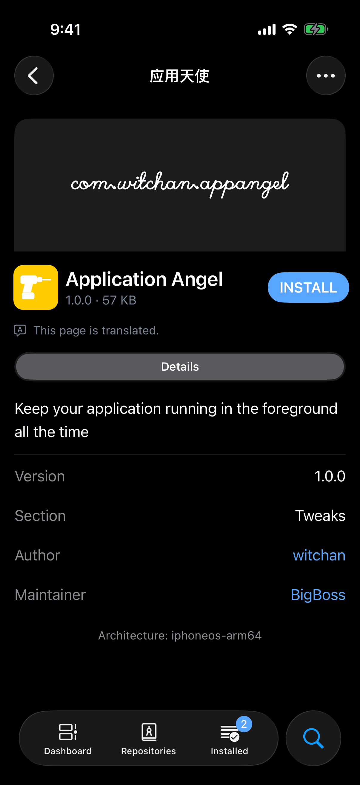

A package's page is written in its author's language. With Auto Translate on, that page opens in your language. Either way, the Translate menu switches one page at a time between the original and the translation, and lets you choose the languages.
Auto Translate
- Open the Dashboard tab and tap the gear at the top right. Settings opens.
- Find the Packages group. Auto Translate is its first row.
- Turn the switch on.


When you turn the switch on, it returns to off for a moment while Irisin asks your device whether it can translate into your system's language. The switch comes on only when the check passes. If the check fails, the switch stays off and an alert titled Unable to Translate gives the reason: This device does not offer system translation. or System translation does not support this language. Tap Dismiss to close it. Turning the switch off needs no check and takes effect at once.
With Auto Translate on, a package's page appears as its author wrote it, then the translation fades in over it. A line under the banner reports the progress. It shows a spinner and Translating…, then either This page is translated. or Unable to translate this page. The line is a note, not a button: tapping it does nothing.
- Translating…the author's page, first
- The system's translatorasked the way it prefers
- The on-device modelasked when that fails
- This page is translated.the translation fades in
If both fail, the page stays as written:
Unable to translate this page.
The system's own translator does the work, not a service run by Irisin. Irisin first asks it the way the system prefers, which may be Apple's server, and asks the on-device model when that fails. Irisin sends the text nowhere else.
A page already in your language stays as it is: the line goes away and no alert appears. A failure shows the Unable to Translate alert once each time you launch Irisin. After that, on this package or any other, only the line under the banner tells you that a page could not be translated.
Irisin remembers the translations of the last fifty packages you read, so returning to a page, or switching how it reads, shows the translation at once. Those translations last only while Irisin is running: nothing is saved, and the next launch starts with none.
Source and Target Language
Below the three ways to read the page, the Translate menu has two more rows, Source Language and Target Language. Each shows its current value under its name and opens a list of languages. Each list comes from the system, read when you open it and sorted by each language's name as your device spells it. The source list holds exactly the languages the system can translate from, and the target list exactly the languages it can translate into.
Source Language is the language the page is written in. It starts at Detect Language, the item above the list, which lets the system identify the language. Your choice belongs to the page you are on: it is not saved, and the next page you open starts at Detect Language again. Name the language when detection gets it wrong.
Target Language is the language you read in, and it has no Detect Language item. Once you choose one on any package's page, it is kept for every page, Auto Translate included. Until you choose one, pages translate into your system's language, and follow that language if you change it.
Choosing a language translates the page again at once when the page shows Translated or Compared. When the page shows Original, the choice is only remembered, and it is used the next time the page shows a translation.
What Is Translated
Irisin translates the prose of a page and nothing else: its text, headings, labels, the titles of reviews, the names of its tabs, and the package's name in the banner. The name in the banner goes with the page, so it reads as written when the page shows Original. The title in the navigation bar always stays as written.


These parts are never translated and come back exactly as written:
- links and web addresses;
- code, whether a few words inside a sentence or a whole block;
- a line with no letters in it, such as a version number;
- the rows of a page's table, such as Version, Author, and Maintainer;
- buttons.
A translated line loses its bold and italics, and its strikethrough. Translation moves those markers away from the words they belonged to, and they would show as stray asterisks, so Irisin drops them.
A piece the system leaves untranslated stays in its own language. The rest of the page still changes, so one paragraph in the original language among translated ones is not an error.
When It Cannot Translate
Irisin answers with one of these alerts.
| Title | Message | What It Means |
|---|---|---|
| Nothing to Translate | This page is already in the target language. | The page reads in your language already. The same alert appears when the system was not sure what language the page is in, or gave the text back unchanged. Name the Source Language and try again. You see this alert only for a translation you asked for from the menu. |
| Unable to Translate | System translation does not support this language. | The system has no way from the page's language to yours. Try another Target Language, or name the Source Language if detection may have picked the wrong one. |
| Unable to Translate | This device does not offer system translation. | Irisin found no system translation it can use on this device, or the system did not answer within twenty seconds. Pages stay as written. |
| Unable to Translate | Any other message from the system | The system's translator refused the page, and the message is its own reason. |
After a failure the page stays as it read before and the checkmark in the menu goes back. A translation you asked for from the menu shows its alert every time, not once per launch, but only while the package's page is on screen with no other alert or sheet over it. With Auto Translate on, the line Unable to translate this page. under the banner still tells you.
A page with no prose has nothing to translate. It stays as written and shows no line.
Every failure is written to the app log, whether or not an alert appeared. To read it, see The Logs.